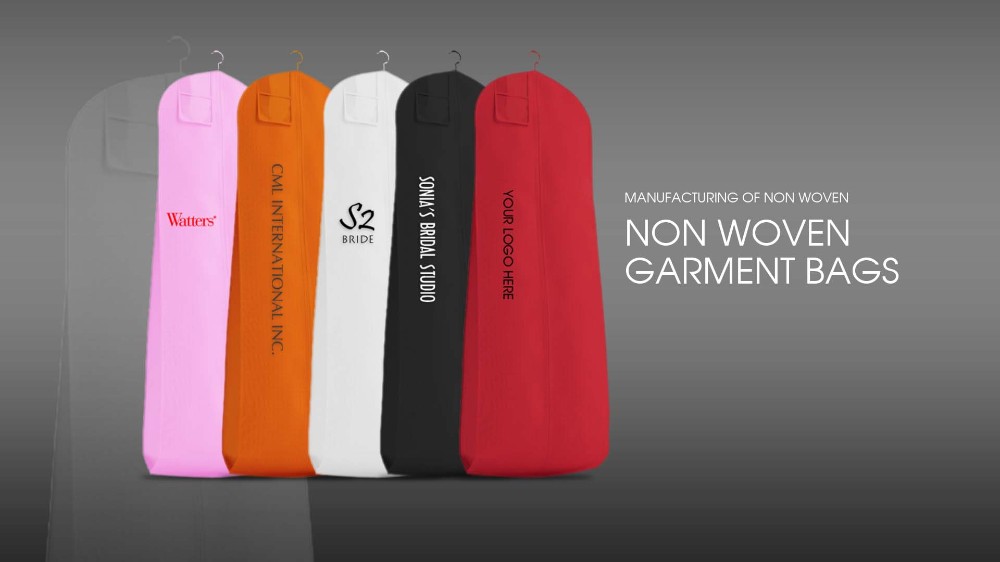

I encourage you do diversify and seek out new business opportunities with CML. Trust us to develop a comprehensive manufacturing program for your organization that will make contribution to your growth. Enclosed is a strategic proposal for an innovative outsourcing program for your consideration.
Our Services
With unprecedented access to state run manufacturing plants provides us with a reliable source of skilled factory workers, avoiding many of the pitfalls one may encounter when trying to source on their own. With a team of 500 or more skilled factory workers at our disposal, CML can provide for all your manufacturing needs. CML has local agents around the world forming working partner ships with manufacturing plants to ensure you the most competitive price and the best quality standards.
CML International can save you money by using our global sourcing system to provide the highest quality products at the most competitive prices. This is how we do it:
Competitive Bidding
We have experienced agents throughout the major manufacturing areas in Vietnam; this enables us to compare prices to other local factories so we can get you the most competitive pricing. This strategy can save you 40% in manufacturing costs.
Quality Control
CML will help facilitate the quality assurances your business necessitates and customize the quality control practices that fit those requirements. We will work closely with you in utilizing the most appropriate inspection procedure(s) that are considered necessary to assure the quality you expect such as:
Product Confidentiality
Protecting trade secrets is one of an organization's most important assets. CML recognizes that trade secrets provide a company with a competitive advantage and vital in today's competitive bridal market. We only work with factorise that are willing to work under the terms of a mutually agreeable Non-disclosure or Confidentiality Agreements. We impose a rigorous set of guidelines and procedures that the factories must follow in order for them to receive the contract.
Local Servicing of our Clients
You will be dealing solely with our agents in Canada thus avoiding many of the language and customs barriers in which you many face if you were to source your product individually.
Estimating
Our detailed knowledge of the Asian manufacturing capabilities nationwide along with our close vendor relationships, enable us to provide the most competitive, high quality manufacturing capabilities for your company. We offer free nonobligatory estimates before any work is done. All we require is engineered drawings and samples to give you hard numbers on the savings you will realize.
Pre-Production samples
Preproduction samples are deliverd to our client to insure satisfaction before any product run is made. If necessary, adjustments will be made to the prototype so our client has complete confidence in the quality of product they will receive.
Shipping Logistics
Strict Freight cost can be a significant portion of the over-all cost of goods, so it is essential to understand the cost before bringing in goods from overseas. CML can create many cost effective transportation options that can be tailored to meet your supply chain requirements. We have establishes a network of airfreight forwarders, customs agents and dosmetic distribution experts who will work closely with you to improve supply-chain.
Manufacturing with CML
Outsourcing manufacturing is critical in maximizing productivity and minimizing cost. According to some leading research companies, by 2011, some 80% if American corporations will participate in various offshore outsourcing-manufacturing ventures throughout the world. Aggressive companies know higher profit margins can only be realized through greater cost efficiencies and better use of time and money.
When an American company negotiates with an Asian vendor, it rarely gets an "Asian Price". Knowledgeable companies inderstand the sourcing product manufacturing in Asian is far more complicated than finding one or two factories to make product offshore. CML inderstands the obstacles faced by many North American companies and can bridge the cross-cultural differences that make manufacturing offshore a smooth transition.
Strategic outsource manufacturing with CML can generate the necessary funds for your company to increase R&D through lower production cost whilte adhering to the company's quality and standards. This enables your company to remain on the fore front in the increasing ly competitive bridal industry. Many of today's sophisticated companies have chosen to concentrate on R&D and sales, and oursource most of their high volume and labor-intensive assembly operations. This eliminates problems of production, staffing and continual plant modernization. Many companies today choose to outsource the manufacturing of their entire product lines to cut prices, raise market share, and dominate their industry.
The benefits of manufacturing with CML

{kind=link}
{kind=link}
{kind=link}
{kind=link}
{kind=link}
{kind=link}
{kind=link}
{kind=link}